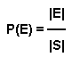

Member Count: 316,431 -
October 24, 2011
[Get Time]


 
|
It has been said that life is a school of probability. A major effect of probability theory on everyday life is in risk assessment. Let's suppose you have an exam and you are not so well prepared. There are 20 possible subjects, but you only had time to prepare for 15. If two subjects are given, what chances do you have to be familiar with both? This is an example of a simple question inspired by the world in which we live today. Life is a very complex chain of events and almost everything can be imagined in terms of probabilities.
Rolling a die once
We define an event as any collection of outcomes of an experiment. Thus, an event is a subset of the sample space S. If we denote an event by E, we could say that E⊆S. If an event consists of a single outcome in the sample space, it is called a simple event. Events which consist of more than one outcome are called compound events.
Sample space S = {1, 2, 3, 4, 5, 6} Tossing two coins Sample space S = {(Heads, Heads), (Heads, Tails), (Tails, Heads), (Tails, Tails)} What we are actually interested in is the probability of a certain event to occur, or P(E). By definition, P(E) is a real number between 0 and 1, where 0 denotes the impossible event and 1 denotes the certain event (or the whole sample space). As stated earlier, each possible outcome is represented by exactly one point in the sample space. This leads us to the following formula: 
That is, the probability of an event to occur is calculated by dividing the number of favorable outcomes (according to the event E) by the total number of outcomes (according to the sample space S). In order to represent the relationships among events, you can apply the known principles of set theory. Consider the experiment of rolling a die once. As we have seen previously, the sample space is S = {1, 2, 3, 4, 5, 6}. Let's now consider the following events:
Event A = 'score > 3' = {4, 5, 6}
Event B = 'score is odd' = {1, 3, 5} Event C = 'score is 7' = ∅ A∪B ='the score is > 3 or odd or both' = {1, 3, 4, 5, 6} A∩B ='the score is > 3 and odd' = {5} A' = 'event A does not occur' = {1, 2, 3} We have:
P(A∪B) = 5/6
P(A∩B) = 1/6 P(A') = 1 - P(A) = 1 - 1/2 = 1/2 P(C) = 0 The first step when trying to solve a probability problem is to be able to recognize the sample space. After that, you basically have to determine the number of favorable outcomes. This is the classical approach, but the way we implement it may vary from problem to problem. Let's take a look at QuizShow (SRM 223, Div 1 - Easy). The key to solving this problem is to take into account all the possibilities, which are not too many. After a short analysis, we determine the sample space to be the following:
S = { (wager 1 is wrong, wager 2 is wrong, you are wrong),
(wager 1 is wrong, wager 2 is wrong, you are right), (wager 1 is wrong, wager 2 is right, you are wrong), (wager 1 is wrong, wager 2 is right, you are right), (wager 1 is right, wager 2 is wrong, you are wrong), (wager 1 is right, wager 2 is wrong, you are right), (wager 1 is right, wager 2 is right, you are wrong), (wager 1 is right, wager 2 is right, you are right) } The problem asks you to find a wager that maximizes the number of favorable outcomes. In order to compute the number of favorable outcomes for a certain wager, we need to determine how many points the three players end with for each of the 8 possible outcomes. The idea is illustrated in the following program: int wager (vector Let's now consider a series of n independent events: E1, E2, ... , En. Two surprisingly common questions that may appear (and many of you have already encountered) are the following:
The best way to answer the second question is to first determine the probability that no event will occur and then, take the complement. We have: These formulae are very useful and you should try to understand them well before you move. BirthdayOdds A good example to illustrate the probability concepts discussed earlier is the classical "Birthday Paradox". It has been shown that if there are at least 23 people in a room, there is a more than 50% chance that at least two of them will share the same birthday. While this is not a paradox in the real sense of the word, it is a mathematical truth that contradicts common intuition. The TopCoder problem asks you to find the minimum number of people in order to be more than minOdds% sure that at least two of them have the same birthday. One of the first things to notice about this problem is that it is much easier to solve the complementary problem: "What is the probability that N randomly selected people have all different birthdays?". The strategy is to start with an empty room and put people in the room one by one, comparing their birthdays with those of them already in the room: int minPeople (int minOdds, int days)
{
int nr;
double target, p;
target = 1 - (double) minOdds / 100;
nr = 1;
p = 1;
while (p > target)
{
p = p * ( (double) 1 - (double) nr / days);
nr ++;
}
return nr;
}
Sometimes a probability problem can be quite tricky. As we have seen before, the 'Birthday Paradox' tends to contradict our common sense. But the formulas prove to us that the answer is indeed correct. Formulas can help, but to become a master of probabilities you need one more ingredient: "number sense" . This is partly innate ability and partly learned ability acquired through practice. Take this quiz to assess your number sense and to also become familiar with some of the common probability misconceptions. Step by Step Probability Computation In this chapter we will discuss some real TopCoder problems in which the occurrence of an event is influenced by occurrences of previous events. We can think of it as a graph in which the nodes are events and the edges are dependencies between them. This is a somewhat forced analogy, but the way we compute the probabilities for different events is similar to the way we traverse the nodes of a graph. We start from the root, which is the initial state and has a probability of 1. Then, as we consider different scenarios, the probability is distributed accordingly. NestedRandomness This problem looked daunting to some people, but for those who figured it out, it was just a matter of a few lines. For the first step, it is clear what do we have to do: the function random(N) is called and it returns a random integer uniformly distributed in the range 0 to N-1. Thus, every integer in this interval has a probability of 1/N to occur. If we consider all these outcomes as input for the next step, we can determine all the outcomes of the random(random(N)) call. To understand this better, let's work out the case when N = 4.
The source code for this problem is given below: double probability (int N, int nestings, int target)
{
int I, J, K;
double A[1001], B[2001];
// A[I] represents the probability of number I to appear
for (I = 0; I < N ; I++) A[I] = (double) 1 / N;
for (K = 2; K ≤ nestings; K++)
{
for (I = 0; I < N; I++) B[I] = 0;
// for each I between 0 and N-1 we call the function "random(I)"
// as described in the problem statement
for (I = 0; I < N; I++)
for (J = 0; J < I; J++)
B[J] += (double) A[I] / I;
for (I = 0; I < N; I++) A[I] = B[I];
}
return A[target];
}
ChessKnight - assign each square a probability and for every move check the squares one by one to compute the probabilities for the next move. DiceThrows - determine the probability of each possible outcome for both players and then compare the results. RockSkipping - the same approach, just make sure you got the lake pattern correctly. PointSystem - represent the event space as a matrix of possible scores (x, y). VolleyBall - similar to PointSystem, but the scores may go up pretty high. Let's now take a look at another TopCoder problem, GeneticCrossover, which deals with conditional probability. Here, you are asked to predict the quality of an animal, based on the genes it inherits from its parents. Considering the problem description, there are two situations that may occur: a gene does not depend on another gene, or a gene is dependent. For the first case, consider p the probability that the gene is to be expressed dominantly. There are only 4 cases to consider:
int n, d[200];
double power[200];
// here we determine the characteristic for each gene (in power[I]
// we keep the probability of gene I to be expressed dominantly)
double detchr (string p1a, string p1b, string p2a, string p2b, int nr)
{
double p, p1, p2;
p = p1 = p2 = 1.0;
if (p1a[nr] ≤ 'Z') p1 = p1 - 0.5;
// is a dominant gene
if (p1b[nr] ≤ 'Z') p1 = p1 - 0.5;
if (p2a[nr] ≤ 'Z') p2 = p2 - 0.5;
if (p2b[nr] ≤ 'Z') p2 = p2 - 0.5;
p = 1 - p1 * p2;
if (d[nr] != 1) power[nr] = p * detchr (p1a, p1b, p2a, p2b, d[nr]);
// gene 'nr' is dependent on gene d[nr]
else power[nr] = p;
return power[nr];
}
double cross (string p1a, string p1b, string p2a, string p2b,
vector
Randomized Algorithms We call randomized algorithms those algorithms that use random numbers to make decisions during their execution. Unlike deterministic algorithms that for a fixed input always give the same output and the same running-time, a randomized algorithm behaves differently from execution to execution. Basically, we distinguish two kind of randomized algorithms:
The main goal of randomized algorithms is to build faster, and perhaps simpler solutions. Being able to tackle "harder" problems is also a benefit of randomized algorithms. As a result, these algorithms have become a research topic of major interest and have already been utilized to more easily solve many different problems. An interesting question is whether such an algorithm may become useful in TopCoder competitions. Some problems have many possible solutions, where a number of which are also optimal. The classical approach is to check them one by one, in an established order. But it cannot be guaranteed that the optima are uniformly distributed in the solution domain. Thus, a deterministic algorithm may not find you an optimum quickly enough. The advantage of a randomized algorithm is that there are actually no rules to set about the order in which the solutions are checked and for the cases when the optima are clustered together, it usually performs much better. See QueenInterference for a TopCoder example. Randomized algorithms are particularly useful when faced with malicious attackers who deliberately try to feed a bad input to the algorithm. Such algorithms are widely used in cryptography, but it sometimes makes sense to also use them in TopCoder competitions. It may happen that you have an efficient algorithm, but there are a few degenerate cases for which its running time is significantly slower. Assuming the algorithm is correct, it has to run fast enough for all inputs. Otherwise, all the points you earned for submitting that particular problem are lost. This is why here, on TopCoder, we are interested in worst case execution time. To challenge or not to challenge? Another fierce coding contest is now over and you have 15 minutes to look for other coders' bugs. The random call in a competitor's submission is likely to draw your attention. This will most likely fall into one of two scenarios:
Will "random" really work? In most optimizing problems, the ratio between the number of optimal solutions and the total number of solutions is not so obvious. An easy, but not so clever solution, is to simply try generating different samples and see how the algorithm behaves. Running such a simulation is usually pretty quick and may also give you some extra clues in how to actually solve the problem. Max = 1000000; attempt = 0;
while (attempt < Max)
{
answer = solve_random (...);
if (better (answer, optimum))
// we found a better solution
{
optimum = answer;
cout << "Solution " << answer << " found on step " << attempt << "\n";
}
attempt ++;
}
Level 1 PipeCuts - SRM 233 BirthdayOdds - SRM 174 BenfordsLaw - SRM 155 QuizShow - SRM 223 Level 2 Collision - SRM 153 ChessKnight - TCCC05 Round 1 ChipRace - SRM 199 DiceThrows - SRM 242 TopFive - SRM 243 ProbabilityTree - SRM 174 OneArmedBandit - SRM 226 RangeGame - SRM 174 YahtzeeRoll - SRM 222 BagOfDevouring - SRM 184 VolleyBall - TCO04 Round 3 RandomFA - SRM 178 PackageShipping - TCCC05 Round 3 QueenInterference - SRM 208 BaseballLineup - TCO '03 Finals Level 3 GeneticCrossover - TCO04 Qual 3 NestedRandomness - TCCC05 Qual 5 RockSkipping - TCCC '04 Round 1 PointSystem - SRM 174 AntiMatter - SRM 179 TestScores - SRM 226 Hangman42 - SRM 229 KingOfTheCourt - SRM 222 WinningProbability - SRM 218 Disaster - TCCC05 Semi 1
|
|
|
Home |
About TopCoder |
Press Room |
Contact Us |
Careers |
Privacy |
Terms
Competitions | Cockpit |
| Copyright TopCoder, Inc. 2001-2011 |